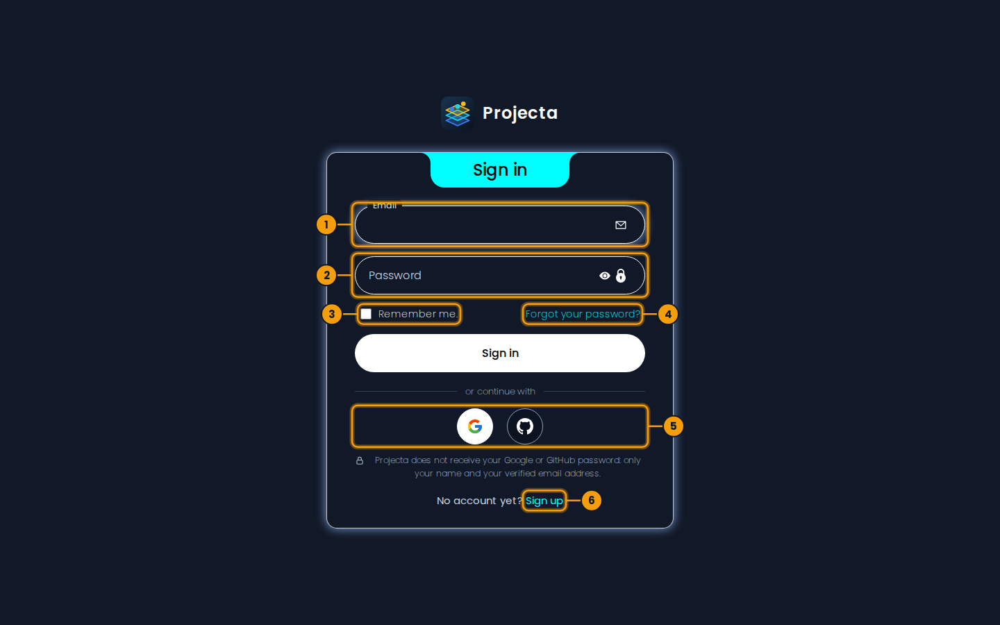
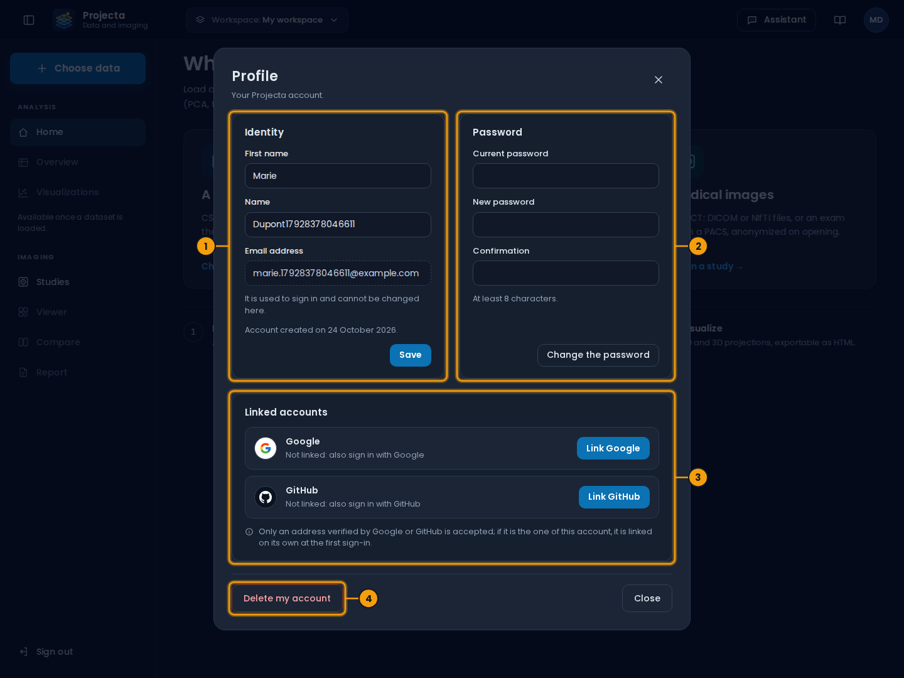

Account and sign-in¶
- Open the online dashboard, https://projecta-dash.vercel.app, or the desktop app, then Continue.
- The first time, Sign up: last name, first name, email address and password (at least 8 characters).
- Sign in with the address and the password. Without Remember me,
the session lasts 30 minutes (
JWT_EXPIRE_MINUTES).

- The email address of the account.
- The password (the eye shows it).
- Remember me: the session stays open 7 days.
- Forgot your password?: a code by email to choose another one.
- Google or GitHub, when set up on the server.
- Sign up: create an account.
Remember me keeps the session 7 days and the email address: the next time, the sign-in page fills it in (box ticked) and, if the session is still open, offers Open the dashboard or Switch account. The password is never kept by the application; the browser’s password manager may offer it.
When the session expires, the sign-in page says so: just sign in again.
With Google or GitHub¶
If the administrator set it up, two round buttons show under Sign in and Sign up: Google and GitHub.
- Click one: the Google or GitHub page opens (in the desktop application, in your browser, which then asks to “open Projecta”).
-
Sign in there and accept: the dashboard opens.
-
First time with this address: an account is created, with the name given by Google or GitHub, without a password (you can set one in Profile).
- An account already exists with this address: you are signed in to it, and Google or GitHub is linked to it.
Projecta never receives your Google or GitHub password: only your name and your email address, if it is verified there. Remember me also counts for this sign-in.
Forgotten password¶
- On the sign-in page, Forgot your password?, then the address of the account and Send the code.
- A 6-digit code arrives by email; it is valid 15 minutes.
- Type the code and the new password (twice, at least 8 characters), then Change the password: the sign-in page opens, the address filled in.
A new code can be asked after a minute (Send the code again); it replaces the previous one. After 5 wrong codes, ask for a new one. The answer is the same for an address without an account.
No email?
Look in the spam folder. On a test server, emails may be held by the server instead of being sent: ask the administrator.
Account¶
The round button with your initials, top right, opens the account menu.
| Entry | Content |
|---|---|
| Profile | first and last name (can be changed), email address, creation date; change of password (the current password is asked); Delete my account, after confirmation, with its workspaces and their history |
| Language | Français or English: the dashboard, the desktop application and this guide; kept for your account |
| Settings | rows per page, narrow side menu, “Columns” panel open when a dataset opens, visualizations shown; applied at once and kept in this browser; Restore the settings goes back to the defaults |
| Notifications | the messages of the session (uploads, errors, saves), newest first; the number of unread ones shows next to the entry |
| Sign out | closes the session; the token is revoked |
Language¶
Account › Language: Français or English. The dashboard shows itself in that language at once, the desktop application (its menus and windows) follows it, and the book button opens this guide in it. The choice is kept for your account: it follows you on another computer. Data (file names, columns, exam descriptions, DICOM tag values) are never translated. In English, the names of the DICOM tags are those of the standard.
Linked accounts¶

- Identity: first and last name; the address does not change here.
- Password: change it, or set the first one.
- Linked accounts: Google and GitHub.
- Delete my account (after confirmation).
Profile › Linked accounts shows Google and GitHub: linked (with the address and the date) or not.
- Link: the page of the provider opens; on return, a notification confirms. The address must be yours, or an address that has no Projecta account yet.
- Unlink: after confirmation. Not possible if it is your only way to sign in: first set a password (Profile › Set a password, without a current password to give).